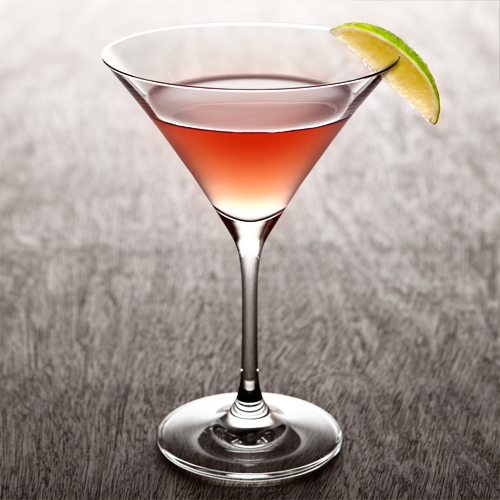
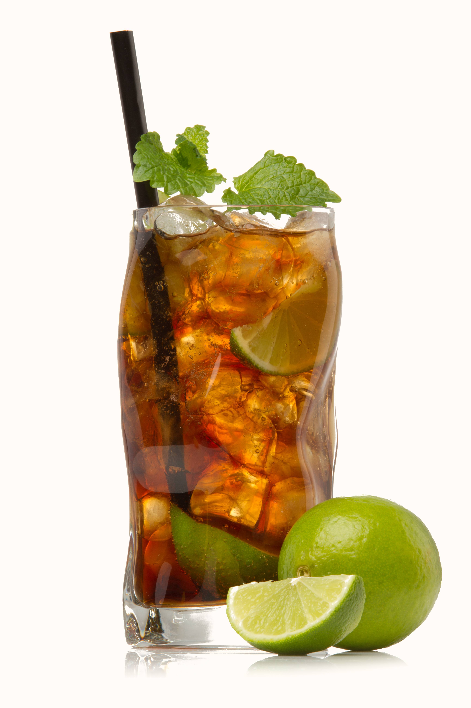
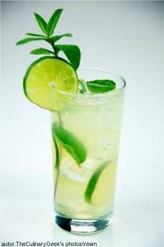

Składniki: wódka cytrynowa (40 ml) likier Cointreau lub triple sec (15 ml) sok z limonki (15 ml) sok żurawinowy (30 ml) kostki lodu Sposób przygotowania: Do shakera wrzucamy kilka kostek lodu. Następnie wlewamy do niego wszystkie składniki: wódkę, likier Cointreau, świeżo wyciśnięty sok z limonki oraz sok żurawinowy. Dokładnie wstrząsamy i przelewamy wszystko do schłodzonego kieliszka koktajlowego. Drink ozdabiamy plastrem limonki lub skórką pomarańczy.
CosmopolitanCosmopolitan
Składniki białego rum - 60 ml zimna Coca cola - klin limonki - Sposób przygotowania drinka Zalej rumem lód w schłodzonej szklance typu highball i dolej do pełna coli. Na koniec wciśnij do drinka sok z klina limonki.
Cuba LibreCula Libre
Składniki: biały rum (60 ml) syrop cukrowy (20 ml) lub cukier (biały lub trzcinowy – 2 łyżeczki) mięta (6-8 listków) limonka (4-5 cząstek) kruszony lód woda gazowana Sposób przygotowania: Mojito drink zaczynamy przygotowywać od włożenia do szklanki 4-5 cząstek limonki, 6-8 listków mięty oraz wlewamy syrop cukrowy (lub wsypujemy dwie łyżeczki cukru). Wszystko rozcieramy muddlerem. Następnie wsypujemy kruszony lód (mniej więcej do połowy) i wlewamy biały rum. Dokładnie mieszamy i uzupełniamy szklankę kruszonym lodem oraz wodą gazowaną. Mojito dekorujemy plastrem limonki i gałązką mięty.
MohitoMohito
